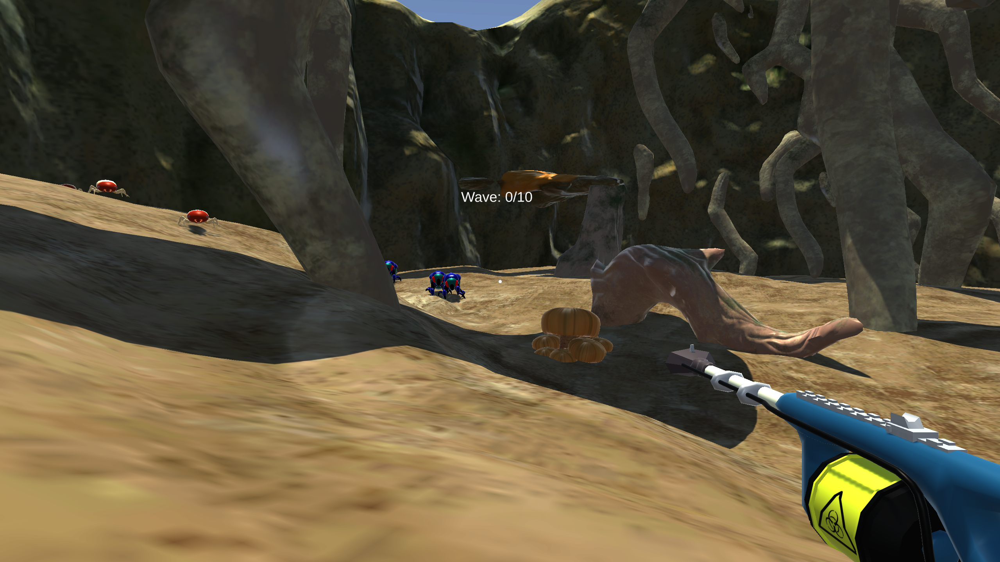
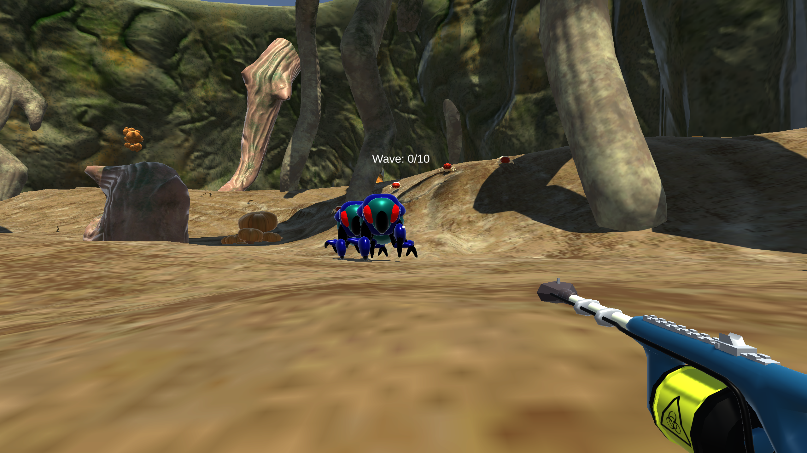

PROJECT / SPRING 2023
Root of All Evil
Overview
This project was made for the Global Game Jam, an event where all games must be completed within 48 hours. so all the designing, implementing, and bug shooting had to be done in a quick timeframe.
There was a lot of stress for me when working on this project, I was the main programmer for the project, but at the time, my knowledge about programming wasnt that great. so development for me was slow and difficult. I was also managing a whole group of people that were 3d artists, 2d artisits, musician, and our 1 other programmer. a lot of responsibility fell on me. despite our asset developers, I was still the one that usually had to go in and actually implement each asset myself. such as applying the textures and colors correctly and applying animations from each character
the theme of the jam was roots, and in this game, you are an exterminator who shrunk himself down to protect a plants roots from bug invaders. you must survive multiple waves of bugs trying to invade and kill you, with each wave getting progressively harder with more enemies spawning
despite the large team size, we were all pretty novice in actually developing a game and importing developed assets. despite this, we still finished a game that plays well enough, and has a fun, albeit goofy, flying mechanic.
My Role
- Created a 3D action first person shooter in Unity where you are an exterminator killing bugs. You must outlast multiple waves of bugs approaching you with each wave getting more difficult, while using a gun.
- Played the role of a programmer and team leader and organizer of my team.
- Responsible for developing most of the major systems the game needed to be playable, such as movement, player and enemy health, and sounds.
- collaborated in a big team setting, specifying what was needed to finish the game, as well as organizing everyone on who does what.
- used source control/Git with Unity
- Completed the game project in 48 hours for a game jam.
Project Images

